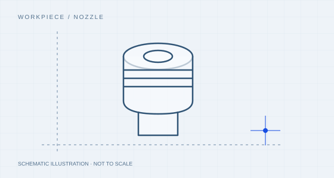
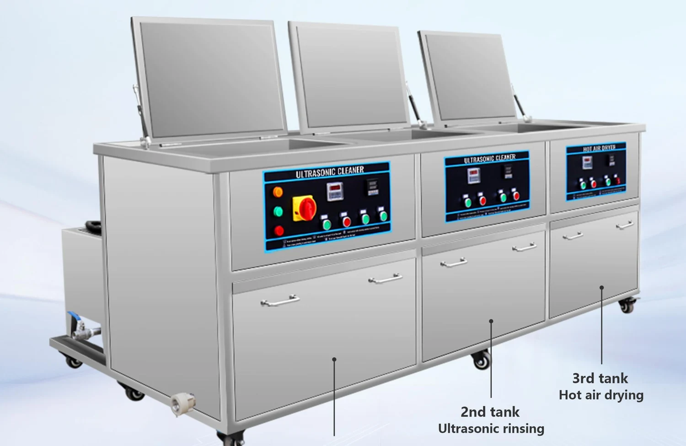

Removable nozzles
Stainless steel · bores and production residue
This application focuses on removable equipment components and tools. Fat, production residue and difficult internal features need a defined cleaning process; ultrasonic cleaning alone does not establish sanitization or food-safety compliance.
Discuss this application
Stainless steel · bores and production residue
Food-contact status · grease
Seals and joints · retained material
Record food-contact status, material and dismantling requirements.
Describe actual fats or production residues and permitted chemicals.
Avoid recontamination and define rinse and handling steps.
Follow the operator’s validated hygiene and verification procedure.
The sequence is assessment guidance. Chemistry, time, temperature and any rinse or drying stage must be validated for the actual material and residue.

A dedicated cleaning bath for batch work, with external handling and any separate rinse or drying arranged around your process.
View equipment
Separate cleaning, rinsing, spray or drying functions into a defined process route; basket transfer is manual unless a handling option is specified.
View equipmentRemovable compatible baskets, controlled rinsing and segregation of incoming and cleaned parts can be discussed.
No direct-food application is claimed on this page. The scope is removable machine parts and tools.
No. Any disinfection or sterilization requirement needs its own validated procedure.
Check elastomer compatibility and whether retained soil can be reached; dismantle according to the equipment procedure.
Use the site’s applicable, validated hygiene and residue checks rather than appearance alone.
Material, dimensions, residue, batch and the required result. Share what you know.